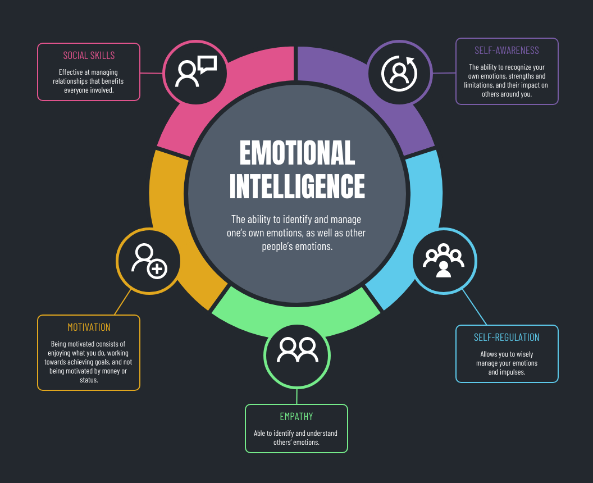

The term Emotional Intellignece was coined in the 1990s, then popularized by psychologist and author Daniel Goleman in his book "Emotional Intelligence: Why It Can Matter More Than IQ."
Emotional Intelligence can best be described as the ability to monitor one's own and other people's emotions, to discriminate between different emotions and label them appropriately, and to use emotional information to guide thinking and behavior.
There are 5 components which are

IQ tests measure your ability to solve problems, use logic, and grasp or communicate complex ideas. Whereas EQ tests measure your ability to recognize emotion in yourself and others, and to use that awareness to guide your decisions.
Humans are social animals, a high EQ helps us to build relationships, reduce stress, defuse conflict, and improve job satisfaction. Which leads to higher productivity and happy life.